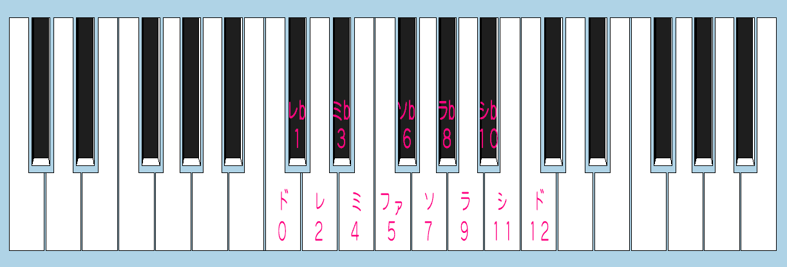
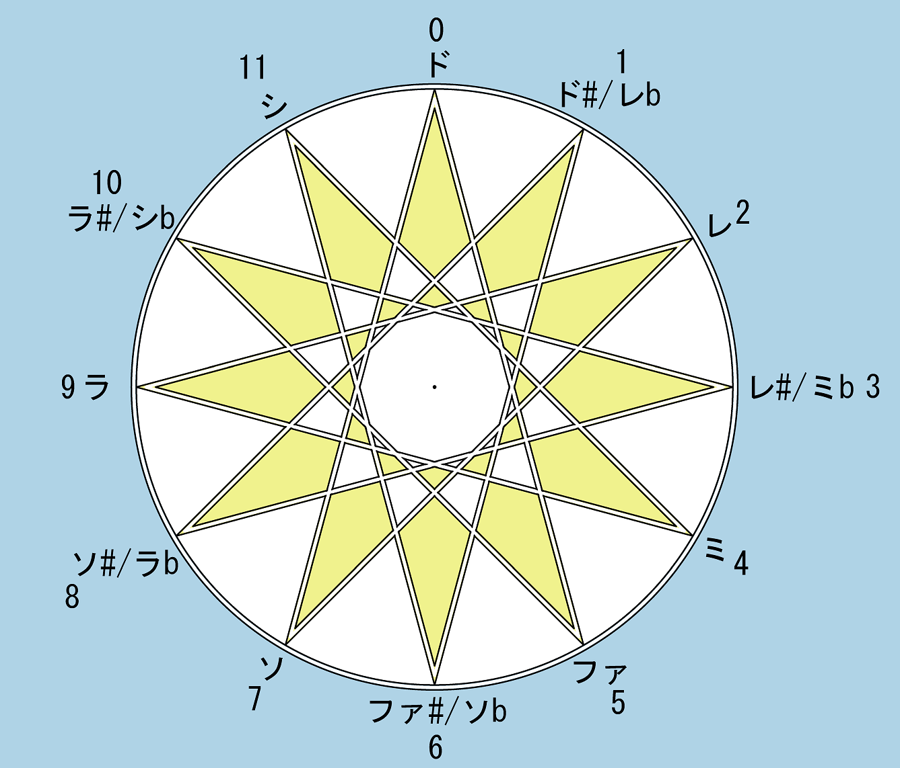

1. 12平均律について
12半音からなるオクターブを持つ
12平均律において、完全五度は7半音となる。
ドを0とし、ド#を1とし……という対応関係を考えた時、ソが7に対応することを確認してみよう。

7と12が互いに素であるため、完全五度は12回積層することによって12平均律上の音名を網羅しつつドへと回帰するを得る。（これを
Circle of
5thという）

しかしこうした「音階」というものがなぜ存在するのかについて考察する人は、音楽家にも実は多くないように思う。
それを考察するために、まずは、和音や音階などの起源ともされる「倍音」という現象に注目してみよう。
倍音をふんだんに含むヴァイオリンやトランペット（ノコギリ波、SawWaveと呼ばれる波形に近い）を聞いた時、
注意深く耳を澄ませると、
基音である音よりオクターブ上の完全五度や、
二オクターブ上の長三度と言った音を聞き取ることができる。
ある単音の楽音現象には、基音というものが存在する。
基音の定義は、「音の中で一番周波数の低い音で、音の基本となる音」である、とするのが一般的だ。
「えっ、じゃあエレキベースにハイパスフィルターを掛けた場合は？」など
気になることもあるが、
ここでは基音の定義には深く踏み入らず、単に「楽器にアサインされた音名で、かつ、もっともそれらしく聞こえる音」辺りの気持ちとする。
その周波数を仮に 1 と置いた時、倍音とはまさに、2 や 3 や 4 …といった周波数を持つ音のことだ。
各倍音の音量バランスが、楽音の音色（ヴァイオリンらしさ、トランペットらしさ）を決定する。
また、そうした倍音の集まりのことを倍音列という。
ある音 1 に対して有理数倍で表現された音高のことを、
「純正音程」と言う。
基音1/1に対する倍音列に属す音程は、2/1, 3/1, 4/1, ……などと表記することが出来るため、
純正音程の一種である。こうした「純正音程」というのは、12平均律の音程と比較して「うなり」を持たない。
そのため、12平均律の音程と比較してとても調和して聞こえる
とされる。
純正音程を要素とするセットによって音階を構築したもののことを、12平均律に対して
「純正律」と呼ぶ。
実際は純正律と12平均律の他に、ピタゴラス音律や1/4-ミーントーン、
ヴェルクマイスター音律、キルンベルガー第3と言った様々な調律法が存在するのだが、
今回の話では純正律と12平均律に焦点を絞って解説する。
2. 倍音列
倍音の存在について知ると、次は「では各倍音はどのような音程なのか？」ということが気になりはじめる。
この章では、1～8倍音までがどのような音程となるのかを紹介していく。
簡単のため、1倍音、つまり基音をドと置く。2倍音は基音のオクターブ上である。
オクターブのオクターブ上は、2倍音の2倍音となるため、2*2 = 4, すなわち4倍音となる。
同様の操作を繰り返すことによって、2^n（ただしnは整数）と置いた時、
それはすべて基音をオクターブ上下させたセットの要素となる。
つまり、ある音のnオクターブ上の音とは、その音の周波数を 2^n 倍した音だと言うことがわかる。
1倍音
ド（基音）
2倍音
ド（1オクターブ上）
3倍音
？？？？
4倍音
ド（2オクターブ上）
5倍音
？？？？
6倍音
？？？？
7倍音
？？？？
8倍音
ド（3オクターブ上）
ここからは12平均律と微細なズレが出るため、「セント」という表記を導入する。
と言っても特段身構える必要はなく、1セントとは、半音の1/100のことである。
100セントで1半音、700セントで7半音=完全五度、1200セントで12半音=1オクターブだ。
セントは対数スケールで定義されており、次のような式で与えられる：
\( \text{セント値} = 1200 \cdot \log_{2}\left( \frac{f_2}{f_1} \right) \)
今回は \( f_{1} = 1 \) を所与として、\( f_{2} \) に色々な数字を入れていくことによって、各倍音のセント数を計算できる。
実地に計算したい場合は、
Google の検索欄に
1200*log_{2}(f) と置いて、
f に気になる値を入れればよい。
1倍音
ド（基音）
0cents
2倍音
ド（1オクターブ上）
1200cents
3倍音
ソ（1オクターブ上）
1901.955cents
4倍音
ド（2オクターブ上）
2400cents
5倍音
ちょっと低いミ（2オクターブ上）
2786.313cents
6倍音
ソ（2オクターブ上）
3101.955cents
7倍音
だいぶ低いシb（2オクターブ上）
3368.825cents
8倍音
ド（3オクターブ上）
3600cents
これで、倍音列の音程が得られた。興味のある向きは、是非
ScaleWorkshop
（Made by
Sevish）
にアクセスしてみて頂きたい。第1から第8までの倍音列を構成しておいたので、
Aから
Kまで、気ままにキーボードを叩いて倍音列の響きを楽しんでみて欲しい。
3. 純正長和音と純正律
4倍音、5倍音、6倍音にあたる音程を同時に鳴らした和音 4:5:6 は
「純正長和音」と呼ばれる。基音1をドとした場合、4はド、5はミ、6はソに当たる。
長和音は非常に好ましい響きであり、特に純正長和音は、「三和音」関係におけるある種のイデアのようなものだと考えられているようだ。
純正長和音はセント表記ではおよそ ド - ミ - ソ = 0 - 386 - 702 という音程で表現され、
12平均律、すなわち通常の長和音 0 - 400 - 700 と比べて、長三度が微妙に（1/6半音ほど）狭く、完全五度がほんのわずか広い。
あるいは、12平均律の長和音が、4 : 5.04 : 6 という微妙な比率を持っていると言い直してもいいかもしれない。
12平均律の長三度 4 : 5:04 は、例えば基音ラ440Hzに対しては554Hzという周波数として与えられる。
差音として4.00に対する1.04、114Hzという周波数が人間の耳の中で自然発生するのだが、
これはラよりも61cents、すなわち三分音ほど高い「微分音」となる。
つまり、差音を考えた時、
基音ラに対して、2オクターブ下のラの三分音上という微妙な音（＝うなり）を、微小な音量で与えてしまうのが12平均律の長三度関係だ。
それに対して、純正律の長三度 4:5 は、基音ラ440Hzに対して550Hzという周波数として与えられる。差音としては 1 が与えられ、
これはまさに2オクターブ下のラそのものである。
このように音程関係がシンプルであるがために、純正長和音はより優れている、とする考え方がある。
となると、出来れば音階を全て純正長和音で構成してみたくなるというのが人情というものだ。
音階とはオクターブを1周期とし、後者に行く程音程が上がっていくという順序関係を持つセリー(series)のことである。
そのため、今後登場する音程を全てオクターブ内に収めるために、有理数比を導入しよう。
1オクターブは基音に対して2倍の高さを持つ音程であったから、基音から1オクターブ内に収まる純正音程は全て、1/1以上かつ、2/1を下回るもののとなる。
数学っぽく括弧を付けて言うと \( \frac{p}{q} \in \lbrack \frac{1}{1}, \frac{2}{1}) \) と表記できるような \( \frac{p}{q} \)
を求めていく格好だ。
悩みそうだが話は簡単で、
純正音程に2を掛ける操作が1オクターブ上を取る操作、2で割る操作が1オクターブ下を取る操作に対応する。
たとえば第5倍音をオクターブ内に収めることを考える。これに対しては、分母に4を選んで 5/4(=1.25) とするのがよい。
2を選んで 5/2(=2.5) とするのでは数値として 2/1 を上回ってしまい、5/8(=0.675)だと 1/1 を下回ってしまう。
このよう
ある音程 p/q を1オクターブ内に「正規化」する操作は、今後純正音程を考えていくに当たって、数えきれないほど行うことになるので、習慣づけておくべきだ。
ド
1/1
0cents
ミ
5/4
386cents
ソ
3/2
702cents
この表記法によると、純正長和音は 1/1 : 5/4 : 3/2 と表記できることが分かる。
全体の分母を4に均せば、4/4 : 5/4 : 6/4 であり、
分母の4を外せば依然として 4:5:6 という比率が保たれているままであることを確かめられる。
セントは、同じく
Google の検索欄に
1200*log_{2}(5/4) などと入力して計算すれば、出てくる。
さて、音階を構成するには当然これだけでは足らない。
主和音すなわち
トニック C△を定義したのだから、
属和音すなわち
ドミナント G△ と、
下属和音すなわち
サブドミナント F△が求められるのは自然なことだ。
これが定義されていれば、長調における基本的なケーデンス C△ → F△ → G△ → C△ を実現できるのだから
（短調好きの同士には今しばらくお待ちいただきたい）。
G△ = ソシレは、ソ = 3/2 の上に構成される長和音だ。
構成自体は簡単で、3/2 に対する長三和音関係 1/1 : 5/4 : 3/2 を再度考えればよい。
ソに対する長三度は、
\( \frac{3}{2} \times \frac{5}{4} = \frac{15}{8} \)
といった積で与えられる。つまり、 15/8 こそがソの長三度上のシである。こういった、
完全五度 + 長三度といった音程同士の和は、純正音程においては積として表されるという感覚が、
私の（あまりこなれているとは言い難い）文で、なんとか読者に伝わると欲しい。
同様にして、レはソの完全五度上であるから、
\( \frac{3}{2} \times \frac{3}{2} = \frac{9}{4} \)
となる。これは、中央ド = 1/1 から見ると長九度上となっていてオクターブ＝完全八度よりも高くなっている。
そのため、2で除して、9/8とすればオクターブ内に収まる。
ド
1/1
0cents
レ
9/8
204cents
ミ
5/4
386cents
ソ
3/2
702cents
シ
15/8
1088cents
続けて、F△のために、ファやラを定義する。
特にファは、せっかく純正音程による完全五度を定義したのだから、ドの純正完全五度下でなければ切ない。
逆数を取って ファ = 2/3 としておけば、その上の完全五度 = 3/2 を与えた時に、
\( \frac{2}{3} \times \frac{3}{2} = \frac{1}{1} = ド\)
となり、丁度 1/1 = ドと等しくなる。
ただし2/3 では同じくオクターブ下のファになってしまうので、今度は2倍、4/3 としておけばオクターブ内に収まる。
ラは 4/3 の長三度上、すなわち
\( \frac{4}{3} \times \frac{5}{4} = \frac{5}{3} \)
となる。余裕があれば、与えられたF△やG△の比率が、4:5:6 と等しくなっていることを確認されたい。
ただし、G△について考える時は、ソ : シ : レ = 3/2 : 15/8 : 9/8とするのではなく、レのみオクターブ上の9/4となることには留意。しつこいようだが、
オクターブを上げることは有理数に2を掛けること、オクターブを下げることは有理数を2で除すること、という感覚を身に着けるのがよい。
ド
1/1
0cents
レ
9/8
204cents
ミ
5/4
386cents
ファ
4/3
498cents
ソ
3/2
702cents
ラ
5/3
884cents
シ
15/8
1088cents
ド
2/1
1200cents
これで、純正律における長音階が完成した。全て有理数で書かれているせいか、
どことなく魔術的というかピタゴラス教団的というか、ドキドキと心躍る感じがある。
同様に、黒鍵部分についても導入していこう。まずは短3度 ミ♭ を導入する。
実は既に短三度が登場しており、ミ-ソ間、ラ-ド間、シ-レ間だ。
これらは全て、ドミソ、ファラド、ソシレと言った、それぞれ4:5:6の関係にある和音の後半部であり、
6/5であることがわかる。
先ほどもやった通り、この関係をファ 4/3 や ソ 3/2 に掛けていけば自然と、
\( \text{ラ♭} = \frac{4}{3} \times \frac{6}{5} = \frac{8}{5} \)
\( \text{シ♭} = \frac{3}{2} \times \frac{6}{5} = \frac{9}{5} \)
といった関係が確かめられる。
ド
1/1
0cents
レ
9/8
204cents
ミ♭
6/5
316cents
ミ
5/4
386cents
ファ
4/3
498cents
ソ
3/2
702cents
ラ♭
8/5
813cents
ラ
5/3
884cents
シ♭
9/5
1018cents
シ
15/8
1088cents
ド
2/1
1/1
ここまで来たら、レ♭ や ファ#を求めることは決してわがままではあるまい。
ファ#を求める理由をとりあえずリディア旋法に置くのであれば、ファ#は D△ = レファ#ラを構成するためのものであり、
レ = 9/8 の長三度上、すなわち
\( \text{ファ♯} = \frac{9}{8} \times \frac{5}{4} = \frac{45}{32} \)
であるのが望ましい。これはシ = 15/8 の完全五度上とも一致する（計算は省く）。
レ♭は、フリュギア旋法に由来を置くとしよう。ミ = 5/4 から見た ファ = 4/3 こそがまさに、ド = 1/1 から見た レ♭ = p/q である。つまり
\( \frac{5}{4} : \frac{4}{3} = \frac{1}{1} : \frac{p}{q} \)
を解けばよく、要するに
\( \text{レ♭} = \frac{p}{q} = \frac{4}{3} \times \frac{4}{5} = \frac{16}{15}
\)
となる。かくして
12音を求める長い旅は終わり、ここに
ド
1/1
0cents
レ♭
16/15
112cents
レ
9/8
204cents
ミ♭
6/5
316cents
ミ
5/4
386cents
ファ
4/3
498cents
ファ#
45/32
590cents
ソ
3/2
702cents
ラ♭
8/5
813cents
ラ
5/3
884cents
シ♭
9/5
1018cents
シ
15/8
1088cents
ド
2/1
1200cents
という対応関係が得られた。これこそが「純正律」である。
同じく
ScaleWorkshopに
出来上がった12音純正律の音階を作成しておいたので、実地に演奏して、聞き心地を体験してみてほしい。
4. 閏（うるう）とコンマ
唐突だが、太陽暦に言う
「閏」というものについて考えてみよう。
一年は365日とされるが、実際には4年に1度、
4の倍数の年すなわち夏季オリンピックの年に、2月29日という余分な一日を追加する必要がある。
この「一日を追加する」操作のことを閏と言い、年のことを、閏年と言うのであった。
これは、地球という天体の持つ
公転（一年を司る周期）と
自転（一昼夜を司る周期）の365倍の間に、0.2564……日といった
微妙な差が存在するという事情に拠る。閏年を与えなかった場合、
4年に1日ずつ、春分・夏至・秋分・冬至が後ろへとずれ込んでいってしまう。
純正律に登場する「コンマ」とは、まさにこの「ズレ」のようなものである。